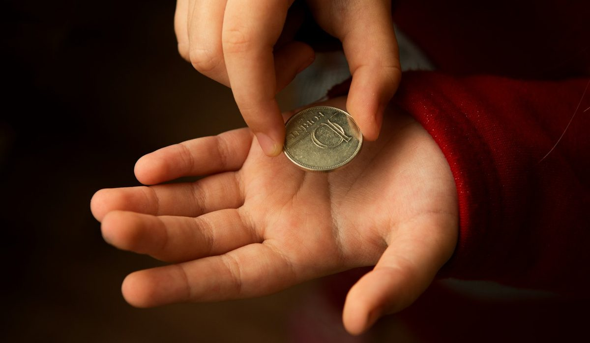

En bref
Aucun texte ne fixe le montant de l'argent de poche, le choix revient aux parents. Les fourchettes observées tournent autour de 13 à 19 € par mois à 12 ans, 27 à 38 € à 14 ans et 46 à 63 € à 17 ans, hors forfait téléphone et transports scolaires. Le montant compte moins que deux choses, la régularité du versement et une liste claire des dépenses qui reviennent à l'ado.
- Aucune loi ni aucun organisme public ne fixe de barème d'argent de poche en France.
- Les fourchettes observées doublent à peu près entre 12 et 15 ans, puis progressent plus lentement jusqu'à 17 ans.
- Avec un budget vêtements inclus, un lycéen gère en général de 73 à 112 € par mois.
- Les cartes pour mineurs fonctionnent en autorisation systématique, un paiement est refusé si le solde ne suffit pas.
- À 18 ans, le compte d'un mineur bascule le plus souvent en compte adulte avec les mêmes coordonnées bancaires.
Sommaire de ce guide
Il n'existe aucun montant officiel
Commençons par ce qui surprend beaucoup de parents. Ni le Code civil, ni la Banque de France, ni service-public.fr ne donnent de barème d'argent de poche. Rien n'oblige à en verser, rien n'impose un âge de départ, rien ne fixe un plafond. C'est une décision éducative, pas une obligation financière.
Ce vide a un avantage. Il laisse chaque famille partir de son propre budget plutôt que d'un chiffre lu ailleurs. Il a aussi un défaut, celui de pousser les parents à comparer avec ce que reçoivent les copains de classe, ce qui n'a aucun sens si l'un paie ses vêtements et l'autre non.
La bonne question n'est donc pas « combien donnent les autres ». C'est « qu'est-ce que mon ado doit payer seul avec cette somme ». Un montant sans liste de dépenses attachée finit toujours en négociation permanente.
L'argent de poche n'est pas un salaire ni une récompense. C'est un budget, avec un périmètre, une date de versement et le droit de se tromper sur de petites sommes.
Les fourchettes observées par âge
Le tableau ci-dessous donne des ordres de grandeur, pas des normes. Les montants supposent que les parents gardent à leur charge le téléphone, la cantine, les fournitures et les transports scolaires. Si votre ado prend en charge l'un de ces postes, il faut l'ajouter au montant, pas le retrancher de ses sorties.
| Âge ou situation | Montant | Rythme | Ce que l'ado paie | Support conseillé | Le point de vigilance |
|---|---|---|---|---|---|
| 11 ans, entrée au collège | 9 à 14 € par mois | Chaque semaine | Friandises et petits plaisirs | Espèces | Garder un montant fixe pour apprendre à attendre |
| 12 ans | 13 à 19 € par mois | Chaque semaine | Petites sorties et cadeaux aux copains | Espèces ou première carte | Ne pas compenser chaque dépassement |
| 13 ans | 18 à 27 € par mois | Chaque semaine ou chaque mois | Sorties et petits achats en ligne | Carte à autorisation systématique | Les achats intégrés aux jeux |
| 14 ans | 27 à 38 € par mois | Chaque mois | Cinéma, restauration rapide, sorties | Carte à autorisation systématique | Fixer un plafond de paiement mensuel |
| 15 ans, entrée au lycée | 33 à 46 € par mois | Chaque mois | Sorties et abonnements de loisirs | Carte | Décider qui paie le forfait téléphone |
| 16 ans | 38 à 54 € par mois | Chaque mois | Sorties et une partie des vêtements | Carte et compte avec RIB | Intégrer l'argent d'un job d'été |
| 17 ans | 46 à 63 € par mois | Chaque mois | Sorties, vêtements, trajets hors école | Carte et compte avec RIB | Préparer le compte adulte de 18 ans |
| Lycéen avec budget vêtements | 73 à 112 € par mois | Chaque mois | Vêtements, chaussures, sorties | Carte et compte avec RIB | Prévoir une marge le premier trimestre |
Montants mensuels pour un ado qui ne paie ni son forfait téléphone ni ses transports scolaires, sauf la dernière ligne. Fourchettes observées, relevé de démonstration de la rédaction, octobre 2026.
Trois paliers ressortent. L'entrée au collège marque le passage d'un argent de poche symbolique à une petite somme régulière. Autour de 14 et 15 ans, les sorties entre amis font bondir les besoins, et c'est souvent le moment où une carte devient utile. À partir de 16 ans, l'écart entre familles se creuse surtout selon que l'ado paie ou non ses vêtements.
La dernière ligne mérite une remarque. Confier un budget vêtements à un lycéen fait grimper le montant mensuel, mais rarement la dépense totale du foyer. Les familles qui le pratiquent constatent plutôt l'inverse. Un ado qui voit partir 40 € dans une paire de baskets réfléchit davantage qu'un ado dont les parents passent en caisse.
Chaque semaine ou chaque mois, quel rythme choisir
Le rythme compte autant que le montant. Un enfant de 11 ans à qui l'on verse 12 € le 1er du mois a souvent tout dépensé le 4. Ce n'est pas un manque de sérieux, c'est que trente jours représentent une éternité à cet âge.
- Avant 13 ans, un versement chaque semaine reste plus lisible et limite les longues périodes sans rien.
- Entre 13 et 14 ans, on peut passer au mois en prévenant l'ado que rien ne sera avancé avant la date suivante.
- Au lycée, le versement mensuel s'impose, calé si possible sur la date à laquelle les parents sont payés.
- Un versement automatique, toujours le même jour, évite les oublis et les rappels qui transforment l'argent de poche en faveur.
Un conseil de méthode. Changez de rythme à une date symbolique, la rentrée ou un anniversaire, et annoncez-le à l'avance. Le passage au mois se prépare, il ne s'improvise pas un mardi soir.
Ce que l'argent de poche doit couvrir
Le périmètre se fixe une fois, par écrit si besoin, et se révise une fois par an. Voici un exemple de répartition pour un ado de 14 ans qui reçoit 32 € par mois. Ce n'est pas un cadre à imposer, c'est une base de discussion.
| Poste | Part du budget | Sur 32 € par mois | Qui fixe la règle |
|---|---|---|---|
| Sorties entre amis | 40 % | 12,80 € | L'ado |
| Petits achats et loisirs | 25 % | 8 € | L'ado |
| Cadeaux d'anniversaire aux amis | 15 % | 4,80 € | L'ado, avec un rappel des dates |
| Mise de côté | 20 % | 6,40 € | Les parents fixent le principe, l'ado le projet |
Exemple de répartition pour un ado de 14 ans. Fourchettes observées, relevé de démonstration de la rédaction, octobre 2026.
La ligne « mise de côté » n'est pas un gadget. Un ado qui a mis 6 € de côté chaque mois pendant un an dispose de près de 77 € pour un achat qu'il a choisi. C'est sa première expérience d'épargne avec un objectif concret, et elle vaut mieux qu'un long discours.
Ce qui reste hors périmètre doit être tout aussi clair. Les fournitures scolaires, la cantine, les vêtements de base et les frais médicaux ne doivent jamais dépendre de l'argent de poche. Sinon, l'ado apprend surtout à arbitrer entre une sortie et un cahier.
Espèces, carte ou compte, quel support à quel âge
Il n'existe pas non plus d'âge légal pour la carte bancaire d'un mineur. Le marché propose des cartes dès 12 ans, parfois avant, toujours avec l'accord et la présence d'un représentant légal. Ce qui doit guider le choix, c'est le fonctionnement de la carte.
Une carte pour mineur sérieuse fonctionne en autorisation systématique. Chaque paiement est vérifié en temps réel et refusé si le solde est insuffisant. Il n'y a ni découvert, ni agios, ni commission d'intervention possible. Le parent garde la main sur les plafonds de paiement et de retrait, et peut bloquer la carte en quelques secondes en cas de perte.

- Les espèces gardent leur intérêt avant 13 ans, parce qu'un billet qui disparaît se voit.
- Une carte à autorisation systématique convient bien entre 13 et 15 ans, avec des plafonds bas fixés par le parent.
- Un compte avec RIB devient utile vers 16 ans, pour recevoir le salaire d'un job d'été ou un virement de la famille.
Pour choisir l'offre elle-même, notre comparatif des cartes pour ados détaille les prix, les frais de dépôt et le contrôle parental de chaque formule. Le bon support coûte entre zéro et quelques euros par mois, rarement plus.
Comment fixer le montant selon votre situation
Si votre budget familial est serré
Partez de ce que vous dépensez déjà pour votre ado en petits achats imprévus sur un mois. Beaucoup de parents découvrent qu'ils versent 20 ou 30 € par mois sans le savoir, au fil des « tu peux me donner 5 € ». Transformer cette somme en argent de poche fixe ne coûte pas un euro supplémentaire et met fin aux demandes au coup par coup.
Si votre ado travaille pendant l'été
Dès 14 ans, un jeune peut travailler pendant une partie des vacances scolaires, sous conditions strictes fixées par le Code du travail. L'argent gagné lui appartient. Inutile de supprimer l'argent de poche en échange, mais c'est le bon moment pour lui confier un poste supplémentaire, les vêtements ou les sorties d'été par exemple.
Si vous avez plusieurs enfants
Fixez une grille par âge et tenez-vous-y. Le cadet recevra le même montant que l'aîné au même âge, corrigé de l'inflation si plusieurs années les séparent. Cette règle simple désamorce la plupart des disputes, bien mieux qu'une égalité stricte entre un enfant de 11 ans et un autre de 16.
Si votre ado dépense tout en trois jours
Ne rattrapez pas. C'est contre-intuitif, mais avancer la somme du mois suivant revient à apprendre qu'un budget n'a pas de fin. Repassez plutôt temporairement à un versement chaque semaine, puis revenez au mois quand deux ou trois périodes se sont bien passées.
Notre verdict
Il n'y a pas de bon montant universel. Les fourchettes observées, autour de 13 à 19 € par mois à 12 ans et de 46 à 63 € à 17 ans, donnent un repère, mais ce qui fait un argent de poche réussi tient en trois règles, un montant fixe, une date fixe et une liste écrite de ce que l'ado paie seul.
Si votre ado a moins de 13 ans, versez une petite somme en espèces chaque semaine. S'il entre au lycée, passez au mois sur une carte à autorisation systématique avec plafonds parentaux. S'il a 16 ou 17 ans, confiez-lui un vrai poste de dépense, les vêtements de préférence, pour qu'il arrive à 18 ans en sachant déjà tenir un budget.
Questions fréquentes
Combien d'argent de poche donner à un ado de 14 ans ?
Aucun barème officiel n'existe en France. Les fourchettes observées tournent autour de 27 à 38 € par mois à 14 ans, pour un ado qui ne paie ni son téléphone ni ses transports scolaires. Si vous lui confiez aussi une partie de ses vêtements, le montant doit augmenter en conséquence.
L'argent de poche est-il obligatoire ?
Non. Aucun texte, ni dans le Code civil ni ailleurs, n'oblige les parents à verser de l'argent de poche à leur enfant. C'est un choix éducatif. L'obligation légale des parents porte sur l'entretien et l'éducation de l'enfant, pas sur une somme à lui confier.
Faut-il verser l'argent de poche chaque semaine ou chaque mois ?
Avant 13 ans, un versement chaque semaine reste plus facile à gérer pour un enfant. Entre 13 et 14 ans, on peut passer au versement mensuel, qui devient la norme au lycée. L'important est de verser toujours le même jour, idéalement par virement automatique.
À partir de quel âge donner une carte bancaire à son ado ?
Aucun âge légal n'est fixé. Les offres pour mineurs démarrent souvent à 12 ans, avec l'accord et la présence d'un représentant légal. Une carte à autorisation systématique, sans découvert possible et avec des plafonds fixés par le parent, convient bien entre 13 et 15 ans.
Peut-on supprimer l'argent de poche pour punir un ado ?
C'est possible, mais rarement efficace. Couper l'argent de poche mélange la discipline et l'apprentissage du budget, et l'ado retient surtout que l'argent dépend de l'humeur des parents. Mieux vaut garder le versement régulier et choisir une autre sanction.
Combien d'argent de poche pour un lycéen de 17 ans ?
Les fourchettes observées vont d'environ 46 à 63 € par mois à 17 ans, hors téléphone et transports scolaires. Avec un budget vêtements inclus, un lycéen gère plutôt de 73 à 112 € par mois. C'est le dernier âge pour l'habituer à tenir un budget avant le compte adulte de 18 ans.
Notre méthode
Ce comparatif repose sur des données publiques, vérifiables une par une, et sur des critères affichés avant le classement.
- Les tarifs sont relevés dans les plaquettes tarifaires et les pages officielles des établissements, frais de tenue de compte et de carte compris
- Les conditions d'ouverture (revenus, âge, justificatifs, délai) sont vérifiées sur le parcours d'ouverture de chaque offre
- Les plafonds réglementaires (frais d'incident, offre clientèle fragile, droit au compte) sont ceux publiés par la Banque de France et service-public.fr
- Les avis clients sont lus sur les stores d'applications et Trustpilot, en retenant les motifs récurrents plutôt que la note seule
- Chaque critère est noté sur 10 et la grille de notation est identique d'un comparatif à l'autre